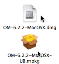
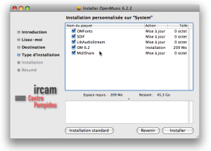
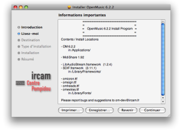

OpenMusic DocumentationHiérarchie de section : OM 6.6 User Manual > System Configuration and Installation > Mac OS X
OpenMusic DocumentationHiérarchie de section : OM 6.6 User Manual > System Configuration and Installation > Mac OS X
Navigation : page précédente | page suivante
Attention, votre navigateur ne supporte pas le javascript ou celui-ci à été désactivé. Certaines fonctionnalités de ce guide sont restreintes.
Mac OS X
System Configuration
OM 6 is distributed for Macintosh Intel or PPC computers on Mac OS X systems. It currently runs on Macintosh Intel or PPC computers (Mac OS X 10.4 and higher).
Installation
Procedure

|
|
Follow the directions of the installer :
|

|
{kind=link}
Installed Items

|
The following items should be installed on your computer :
|
{kind=link}
External applications
External applications may be necessary to play sounds or manipulate sound analysis files when using OM. These tools are :
- Microplayer : a microtonal player in Max/MSP for the rendering of musical objects using extra sound fonts.
- [Multiplayer](http:/www.music.mcgill.ca/~marlon/OMPrisma/OMPrisma/Multiplayer.md "http://www.music.mcgill.ca/~marlon/OMPrisma/OMPrisma/Multiplayer.html (nouvelle fenêtre)") : an application for interactive playback of the multichannel files
- SDIF-Edit : a 3D editor for SDIF sound description files visualization.
Some OM libraries also use external sound processing or synthesis tools to manipulate or generate audio files :
- [SuperVP](http://anasynth.ircam.fr/home/english/software/supervp "http://anasynth.ircam.fr/home/english/software/supervp (nouvelle fenêtre)") and [Pm2](http://anasynth.ircam.fr/home/english/software/pm2 "http://anasynth.ircam.fr/home/english/software/pm2 (nouvelle fenêtre)") : two sound processing kernels dedicated to sound analysis-synthesis. SuperVP is the kernel of [Audiosculpt](http://anasynth.ircam.fr/home/english/software/audiosculpt "http://anasynth.ircam.fr/home/english/software/audiosculpt (nouvelle fenêtre)") and based on Fast Fourier Transform. Pm2 performs a partials analysis based on the additive model. They can be downloaded via the [Ircam Forumnet](http:/forumnet.ircam.fr/363.md "http://forumnet.ircam.fr/363.html (nouvelle fenêtre)").
- [Csound](http://www.csounds.com/docs "http://www.csounds.com/docs (nouvelle fenêtre)"): a general a sound synthesis and signal processing system. It can be downloaded on the [Csound](http://www.csounds.com/downloads "http://www.csounds.com/downloads (nouvelle fenêtre)") website.
- etc.
Uninstallation
The elements above must be removed by the user :
- select the items and press
Cmd+Backspace - drop them in the trash manually.
Références :
Library
A library is a set of tools, or framework, used by an application – like OM – to execute specific tasks.
Navigation : page précédente | page suivante
A propos...(c) Ircam - Centre Pompidou